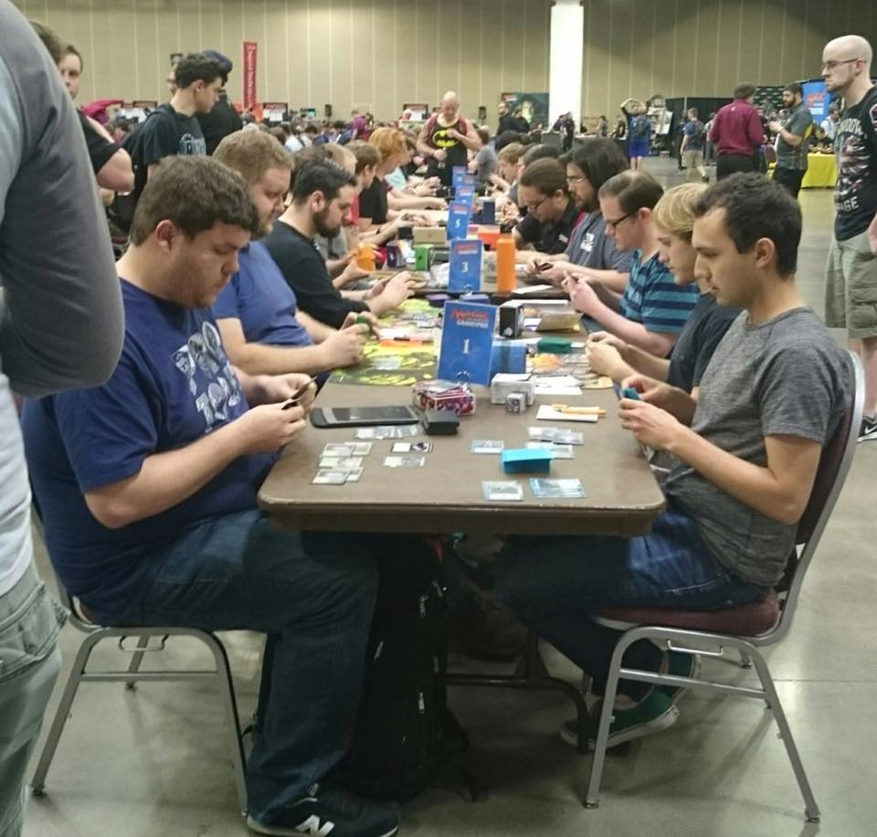

Picture of me playing in a tournament at the top table against one of my favorite professional players.
I started playing trading card games when I was very young. Little did I know years and years later I would still be hooked and playing today. To me there are several aspects to every game that I have played that I'm drawn to. The first, is the ability to collect and trade all the different types of cards and acquire more thus building a collection. Each card game has a wide variety of cards, some can be easy to obtain while others go back longer than some people have been alive. These cards can be cheap and some can be very expensive due to their rarity and condition. The second, is the drive of being competitive and my enjoyment of strategy based games. I have traveled all over the country, met, and played against numorous people from across the world. I have competed in tournaments consisting of a few dozen players, to much larger events hosting thousands of players. I even managed to place top64 at a Magic the Gathering tournament Grand Prix Las Vegas that had almost eight thousand players. This is a very big part of hobbies for me as I love to travel. It is kind of crazy to think that alot of my closest friends to this date came from playing card games. I still to this day have friends from years and years ago that I keep in contact with that also still play from the games I met them in, which brings me to my favorite part of playing TCGs, the social part of it. Without ever taking that first step into a hobby shop, cracking that first booster pack of cards, and sitting down to play, I would have never of met them or have some of the greatest memories I do today.
Pokemon
Charizard from a recent Pokemon Celebrations set.
Out of all the games I have played, I think Pokemon is the most recognized. The Pokemon trading card game first released in December 18, 1998 and is still highly played and collected to this day. It is a game all generations have come to enjoy. Pokemon has several different categories not many people might realize: trading cards, tv shows, movies, plushies, toys, clothes, and much much more! and the best part about it, is that it's all collectible. I have collected off and on from various pokemon sets across the years because lets get real who doesn't like pokemon? The game itself is very fun and can be very very competitve. I myself don't have many accomplishments in the game, a few cities top eight places (type of tourament within the game) but nothing really notable. I play pokemon because it is a good way to spend time with my daughter and see her enjoyment out of opening and learning all the different types of pokemon. Pokemon has also got me to enjoy a different side of it which is Pokemon Go. For more information about Pokemon and everything it has to offer please visit Pokemon.com
Yu-Gi-Oh
Blue Eyes White Dragon an iconic card from the game and tv show.
You activated my trap card! Just kidding lets talk a little bit about Yu-Gi-Oh. Yu-Gi-Oh first released on April 18, 2000 and is another card game still played and highly collected to this day. Yu-Gi-Oh is probably the game I have the most accomplishments in and have played the longest although I don't play anymore due to other interests. Similar to Pokemon, Yu-Gi-Oh has different lines of products and shows that are all collectible and highly sought after today. Yu-Gi-Oh was probably my real first take on traveling and playing competitve. I created a few decks (list of cards to play) in the game that others have continued to use and to play with as well as won some prize cards from high level premier events. Yu-Gi-Oh is a game I will always value as It allowed me to meet some of my closest friends today. For more information about Yu-Gi-Oh and everything it has to offer please visit Yugioh-card.com
Magic the Gathering
Power Nine from my collection, iconic pieces of magic's long history.
Magic the Gathering first released in the summer of 1993. It is one of the oldest and probably highest valued games among collectors to date. The game has cards that are worth more than some peoples houses and it can be shocking once you actually think about it. I have played Magic off and on for years, it is a game that is quite easy to learn and always come back to. It has several formats within the game to meet every gamers interest. Magic can be competitive and casual and in the end its up to you to decide how you want to play it. Magic like Yu-Gi-Oh is a game I have traveled alot for as well as met and played against several professional players. The game has taken a hobby to a whole new level, it even has a hall of fame for its professional players once enough accomplishments and certain criteria has been met. I enjoy magic for many reasons, it is competitive and I like to collect it. Magic has brought me many friends and memories I can never forget. It has taken me all over the country and even landed me a few jobs working large conventions simply from the people I have interacted with. For more information about Magic the Gathering please visit magic.wizards.com
Flesh and Blood
Picture of me with a giant version of an iconic card I won from a Calling that I attended.
Flesh and Blood is a newer TCG and first released on October 2019. It has quicky risen to become one of the world's top selling trading card games. This game is, and I cant say enough, one of the most competitve games I have ever played. It is a game that punishes you for miss sequencing plays and can cost you the match. Almost every game of FaB (Flesh and Blood) I have lost, I can pinpoint exactly to the turn and why I lost. If you are a competitive gamer, I highly recommend checking this game out despite its cost of entry. For still being such a new game, there have already been several large events. One of the most recent being a type of event called The Calling which is where I won the card pictured above. I think this game has a very promising future and many players are switching into it from other games. For more information about Flesh and Blood TCG, please visit Fabtcg.com